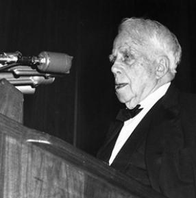

Two roads diverged in a yellow wood,
And sorry I could not travel both
And be one traveler, long I stood And looked down one as far as I could
To where it bent in the undergrowth;
Then took the other, as just as fair,
And having perhaps the better claim, Because it was grassy and wanted wear;
Though as for that the passing there
Had worn them really about the same,
And both that morning equally lay
In leaves no step had trodden black. Oh, I kept the first for another day!
Yet knowing how way leads on to way,
I doubted if I should ever come back.
I shall be telling this with a sigh
Somewhere ages and ages hence: Two roads diverged in a wood, and I-
I took the one less traveled by,
And that has made all the difference.
Mending Wall
Something there is that doesn’t love a wall,
That sends the frozen-ground-swell under it,
And spills the upper boulders in the sun;
And makes gaps even two can pass abreast.
The work of hunters is another thing:
I have come after them and made repair
Where they have left not one stone on a stone, But they would have the rabbit out of hiding,
To please the yelping dogs.
The gaps I mean,
No one has seen them made or heard them made,
But at spring mending-time we find them there.
I let my neighbor know beyond the hill;
And on a day we meet to walk the line
And set the wall between us once again.
We keep the wall between us as we go.
To each the boulders that have fallen to each.
And some are loaves and some so nearly balls
We have to use a spell to make them balance:
"Stay where you are until our backs are turned!"
We wear our fingers rough with handling them.
Oh, just another kind of outdoor game,
One on a side.
It comes to little more:
There where it is we do not need the wall:
He is all pine and I am apple orchard.
My apple trees will never get across
And eat the cones under his pines, I tell him.
He only says, "Good fences make good neighbors."
Spring is the mischief in me, and I wonder
If I could put a notion in his head:
"Why do they make good neighbors? Isn’t it
Where there are cows? But here there are no cows.
Before I built a wall I’d ask to know
What I was walling in or walling out,
And to whom I was like to give offense.
Something there is that doesn’t love a wall,
That wants it down.
"I could say "Elves" to him,
But it’s not elves exactly, and I’d rather
He said it for himself.
I see him there
Bringing a stone grasped firmly by the top
In each hand, like an old-stone savage armed.
He moves in darkness as it seems to me,
Not of woods only and the shade of trees.
He will not go behind his father’s saying,
And he likes having thought of it so well
He says again, "Good fences make good neighbors.
Robert Frost

Occupation
Educator, Poet
Birth Date
March 26, 1874
Date of Death
January 29, 1963
Education
Harvard University, Lawrence High School, Dartmouth College
Birth Place
San Francisco, California
Awards
During his lifetime, Frost would receive more than 40 honorary degrees, and in 1924, he was awarded his first of four Pulitzer Prizes, for his book New Hampshire. He would subsequently win Pulitzers for Collected Poems (1931),A Further Range (1937) and A Witness Tree (1943).
History
Robert Frost was born on March 26, 1874, in San Francisco, where his father, William Prescott Frost Jr., and his mother, Isabelle Moodie, had moved from Pennsylvania shortly after marrying. After the death of his father from tuberculosis when Frost was eleven years old, he moved with his mother and sister, Jeanie, who was two years younger, to Lawrence, Massachusetts. He became interested in reading and writing poetry during his high school years in Lawrence, enrolled at Dartmouth College in Hanover, New Hampshire, in 1892, and later at Harvard University in Boston, though he never earned a formal college degree.
Frost drifted through a string of occupations after leaving school, working as a teacher, cobbler, and editor of the Lawrence Sentinel. His first published poem, "My Butterfly," appeared on November 8, 1894, in the New York newspaper The Independent.
In 1895, Frost married Elinor Miriam White, whom he’d shared valedictorian honors with in high school and who was a major inspiration for his poetry until her death in 1938. The couple moved to England in 1912, after they tried and failed at farming in New Hampshire. It was abroad that Frost met and was influenced by such contemporary British poets as Edward Thomas, Rupert Brooke, and Robert Graves. While in England, Frost also established a friendship with the poet Ezra Pound, who helped to promote and publish his work.
By the time Frost returned to the United States in 1915, he had published two full–length collections, A Boy’s Will (Henry Holt and Company, 1913) and North of Boston (Henry Holt and Company, 1914), and his reputation was established. By the 1920s, he was the most celebrated poet in America, and with each new book–including New Hampshire (Henry Holt and Company, 1923), A Further Range (Henry Holt and Company, 1936), Steeple Bush (Henry Holt and Company, 1947), and In the Clearing (Holt Rinehart & Winston, 1962)–his fame and honors (including four Pulitzer Prizes) increased.
Though his work is principally associated with the life and landscape of New England–and though he was a poet of traditional verse forms and metrics who remained steadfastly aloof from the poetic movements and fashions of his time–Frost is anything but merely a regional poet. The author of searching and often dark meditations on universal themes, he is a quintessentially modern poet in his adherence to language as it is actually spoken, in the psychological complexity of his portraits, and in the degree to which his work is infused with layers of ambiguity and irony.
In a 1970 review of The Poetry of Robert Frost, the poet Daniel Hoffman describes Frost’s early work as "the Puritan ethic turned astonishingly lyrical and enabled to say out loud the sources of its own delight in the world," and comments on Frost’s career as the "American Bard": "He became a national celebrity, our nearly official poet laureate, and a great performer in the tradition of that earlier master of the literary vernacular, Mark Twain."
About Frost, President John F. Kennedy, at whose inauguration the poet delivered a poem, said, "He has bequeathed his nation a body of imperishable verse from which Americans will forever gain joy and understanding."
Robert Frost lived and taught for many years in Massachusetts and Vermont, and died in Boston on January 29, 1963.
"Robert Frost." Poets.org. Academy of American Poets, n.d. Web. 20 Feb. 2016.
Imagery/symbolism: Frost uses the word "Yellow" here to set the "warmth" and calm of the setting, as well as the travel that we face in our lives. The connection to a yellow wood also refers to the seasons, more specifically fall, with is paralleled with the final step of adolescence where we jump into a series of responsibility.
Usage of nature as a symbol for how we cannot always look far into our own lives: The cover of the undergrowth working as part of the 3 dimension extended metaphor in how we must choose our paths based on uncertainty.
Here Frost acknowledges that the path we choose whether its a career path or life in general; it is okay to choose your own path rather than the one laid upon you or the safer one.
The symbolism and theme of nature continues to reign within these lines. The metaphor and personification in the road that wanted wear references the our passion and drive may include. He also makes a mention to again include that these paths are two sides of the same coin, both have been followed through by many people before qualifying that it both peoples will yield equally.
This line acts as the continuation of the extend metaphor that is the entire piece--we are given the idea and sensation of regret for perhaps not following the other path.
Here we are given the structure of the poem as well as punctuation acting another control. The speaker's distressed and thoughtful state-of-mind is conveyed through the the sudden shocking exclamation. However, more importantly we give the switch back to a tone that fits the emotion and setting of one who spends time more reminiscent--reminding us the importance of sticking to our ideals.
Imagery to describe and in the form of future tense. This resembles the final leg of our life, reassuring us that we must look after our decisions with a sense of relief and satisfaction. This message leads to one in which we must now realize that the paths we travel will yield ultimately as long we agree to follow through safely. More important this stanza also acts as a shift from the imagery that Frost sets; allowing the reader to acknowledge that the previous 3rd dimension set by Frost was again, merely just one extended metaphor; in a way allowing us to step back from the poem and reflect on what Frost means much how the traveler reflects on his passage from the fork in the road.
Frost here reiterates the importance and benefits of taking the road less travelled by--making a point to not diminish the other road, but rather upkeep the importance of choosing your own path despite its popularity or support. The structure and punctuation--along with the meter and rhyme--helps give the ending of the poem a final sense of resolution, upheld by the finallity of the punctuation. However it more importantly creates this sense of self-satisfication and peace as the poem moves effortlessly as if under a lazy sun with short pauses in the forms of dashes and a comma after a much shorter sentence--all the while keeping all these thoughts of reflection and peace as a united structure--much like the path of life.
Upon reading the line the rhythm of the poem is thrown off center and we given a parallel to the act of forcing a rabbit in the hole. This is also another clear example of Frost's romanticism as he alludes back to nature when trying to criticize the actions of society and the portrayal of building a wall in between ourselves.
Here we are given a sense of romanticism and the irony of a wall incorporated into the interaction of two people, who get close but never cross-over to the side. This parallels the idea of perhaps having two different philosophies.
This is a metaphor that mocks the way we cling to our ideals and portrays the way that the philosophies we have are mere existences from our upbringing and circumstances in life.
Forest again uses the symbolism of Nature as a means to highlight the difference in upbringing between the speaker and the speaker's neighbor. Making it a point to characterize the speaker as someone who admits-although he doesn't acknowledge it- that he is also extremely close-minded when it comes to acknowledging other philosophies and lifestyle. Although he may mock his neighbor lack of open-mindness and "trivial lifestyle"--hence the pine cone; the speaker is no different.
This quote acts as the speaker's reaction to his neighbor's philosophy. The "only" helps emphasize the condescending attitude of the speaker towards the "close-mindness" of his neighbor; while at the same time playing an ironic undertone towards the previous description as he himself admits that "his apples will never eat under the pine trees" acknowledging that he cannot come to terms with his neighbors ideas.
Symbolism and metaphor acting again as an ironic condescending attitude towards his neighbor and his neighbor inability to be more open minded towards his [the speaker] ideas.
This is a metaphor for the walls we may place around ourselves, as a romantic It also places the irony of the wall again; ending this with the line helps show the importance and way a wall can connect these two different ideas--even if it is to build the wall again. Much the way an argument does with the passion we have.